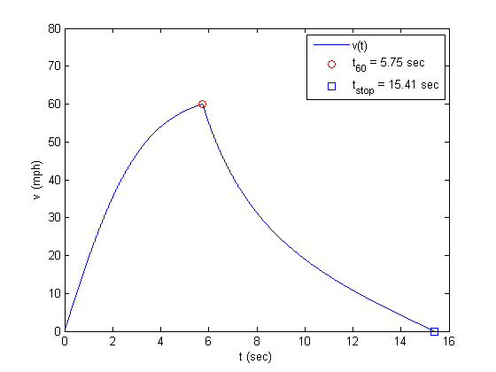
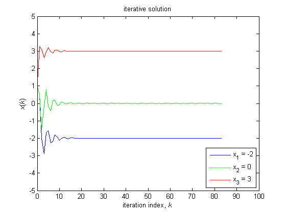
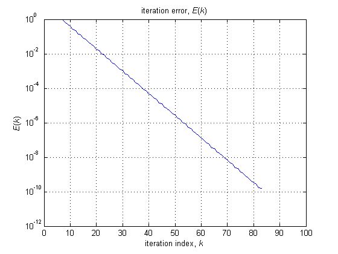

Corentin Rejaud, Matlab Week 9-10, Section 01
Contents
Question 1
Part A
clear all; v(1) = 0; t(1) = 0; T = 0.001; C = 0.005; n = 1; % Solves for n_60 while 1, if v(n) > 60, break; end v(n+1) = v(n) + T*(20 - C*(v(n)^2)); t(n+1) = n*T; n = n + 1; end % n right now is n_60 n_60 = n t_60 = t(n) % t_60 becomes t(n) % Part B % finding t_stop, iterates until v(n) <= 0 while 1, v(n+1) = v(n) + T.*( -3 - C.*(v(n).^2) ); t(n+1) = n.*T; n = n + 1; if v(n) <= 0; break end end n_stop = n t_stop = t(n) x = linspace(0, t(length(t)), length(t)); plot(x, v, 'b-', t_60, v(n_60), 'ro', t_stop, v(n_stop), 'bs'); grid off; xlabel('t (sec)'); ylabel('v (mph)'); xlim([0 16]); ylim([0 80]); set(gca,'xtick',[0:2:16]); set(gca,'ytick',[0:10:80]); legend('v(t)', 't_{60} = 5.75 sec', 't_{stop} = 15.41 sec', 'location', 'ne');
n_60 =
5751
t_60 =
5.7500
n_stop =
15411
t_stop =
15.4100
 Question 2
Part A
clear all; A = [2 -1 2 1 2 2 0 -1 4] b = [2 4 12] x = A\b % Part B I = eye(size(A)); D = diag(diag(A)); B = I - D\A; c = D\b; tol = 10^(-10); x0 = [1,1,1]'; xMatrix(:,1) = x0; k = 1; while 1, xnew = B*x0 + c; xMatrix(:,k+1) = xnew; if norm(xnew-x0) < tol, break; end x0 = xnew; k = k+1; end x = x0; k, x, norm(A*x-b) K = 0:k; figure; plot(K, xMatrix(1,:), 'b-', K, xMatrix(2,:), 'g-', K, xMatrix(3,:), 'r-'); title('iterative solution'); xlabel('iteration index, {\it{k}}'); ylabel('{\it{x}}({\it{k}})'); grid off; xlim([0 100]); ylim([-5 5]); set(gca,'xtick',[0:10:100]); set(gca,'ytick',[-5:1:5]); legend('x_{1} = -2', 'x_{2} = 0', 'x_{3} = 3', 'location', 'se'); % Part C p = max(abs(eig(B))) % Part D for K=1:k+1, E(K) = norm(A*xMatrix(:,K) - b); end K = 0:k; figure; semilogy(K, E(K+1), 'b-'); title('iteration error, {\it{E}}({\it{k}})'); xlabel('iteration index, {\it{k}}'); ylabel('{\it{E}}({\it{k}})'); grid on; xlim([0 100]); ylim([10^-12 10^0]); set(gca,'xtick',[0:10:100]); set(gca,'ytick',[10^-12 10^-10 10^-8 10^-6 10^-4 10^-2 10^0]);
A =
2 -1 2
1 2 2
0 -1 4
b =
2
4
12
x =
-2.0000
0.0000
3.0000
k =
83
x =
-2.0000
-0.0000
3.0000
ans =
1.7487e-10
p =
0.7426
 